Import Members to Projects
New project members can be added to one or more BIM 360® projects. They can be added when Multi-Select is set to either On or Off. If Company is set to blank, then the system will use the default company assigned to the member. If no default is assigned, it will be left blank.
Refer to the Hub members popup information display to view the default company:
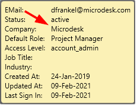
Notice this setting may also be blank:
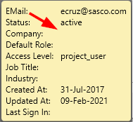
Likewise, one or more project Roles can be assigned. As with the company, if no Roles are assigned the system will add a default Role. If the default Role is empty, the Roles will be left blank for the project/member. The Default Role for each member may be viewed right below the Company, as shown on the Hub member information display, above.
The following example shows an Import for Multiple Project selection. However, except for the number of projects selected, Single Project selection appears and operates in the same manner.
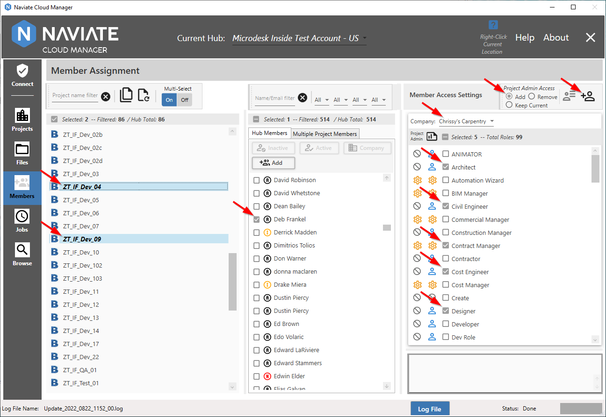
With the company and/or roles selected, the checked members are now ready for assignment to the selected projects by pressing the Import Members to assigned projects button .
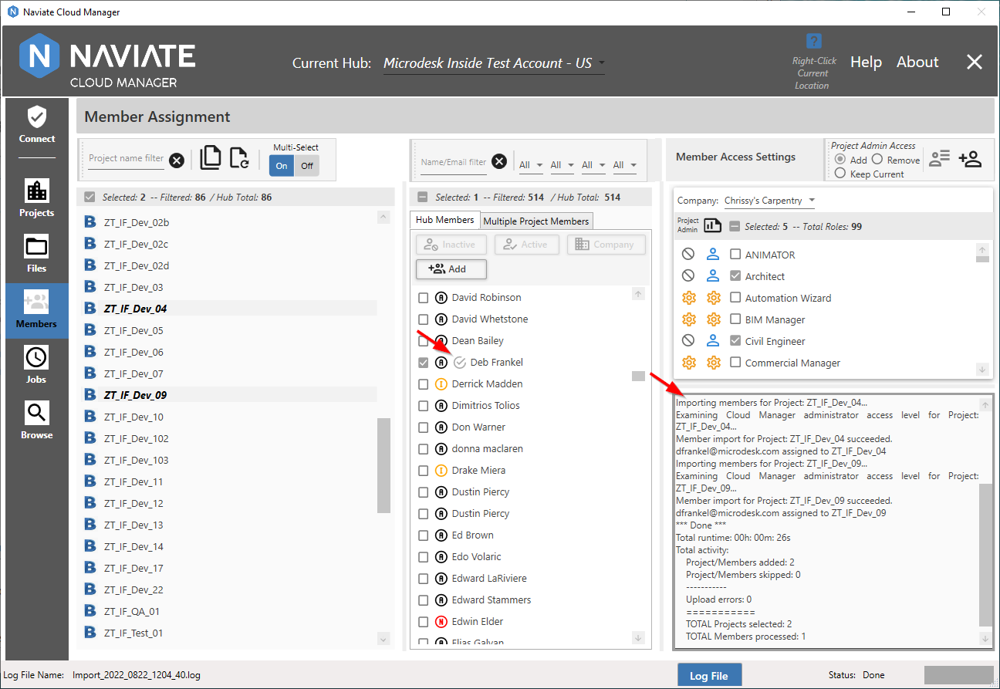
The log window is located below the Member Access Settings. Naviate Cloud Manager displays progress and results as processing occurs. The log screen can be resized as desired.
The 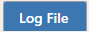 button may also be pressed to bring up the log file in a separate popup window.
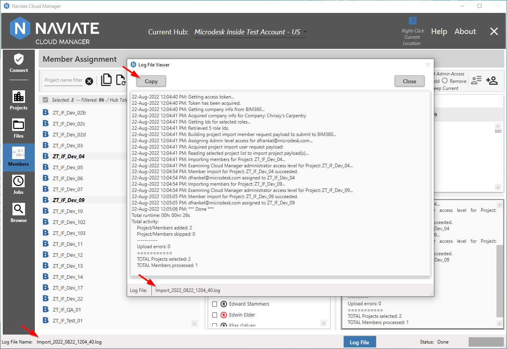
The log file name begins with “Import” and incorporates a timestamp as shown at in the above screenshot. The log file naming convention utilizes a timestamp, the same as described above for Projects and Files logs. Logs can be easily copied and pasted by using the built-in 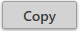 button. Member logs are permanently saved at C:\ProgramData\Microdesk\BIMrx.CloudManager\Logs\Users and may be accessed there at any time.
In addition to the “Import” log, each execution of Import Members generates a timestamped “Response” log. This log doesn’t display in Naviate Cloud Manager and is available only by viewing it from disc. It contains the actual data that is used to invoke the Autodesk Platform Services (APS) APIs when importing members, along with the detailed response received from Autodesk®. However, there is no reason to view these during normal application usage — they are strictly for reference in case needed by Symetri support personnel for diagnosing possible problems.
Of course, the newly-added member also displays in the project member list, which is accessed by switching to the Project Members tab page. With Multi-Select set to Off, a detailed listing for the updated project member displays:
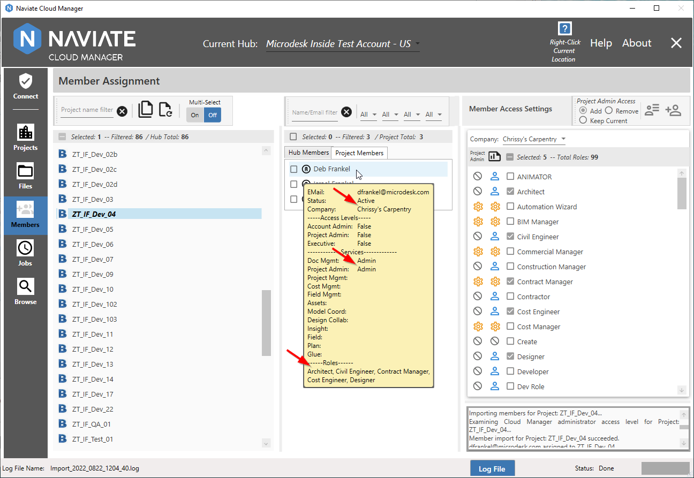
If Multi-Select = On, however, only the project membership information for the currently selected projects is available.
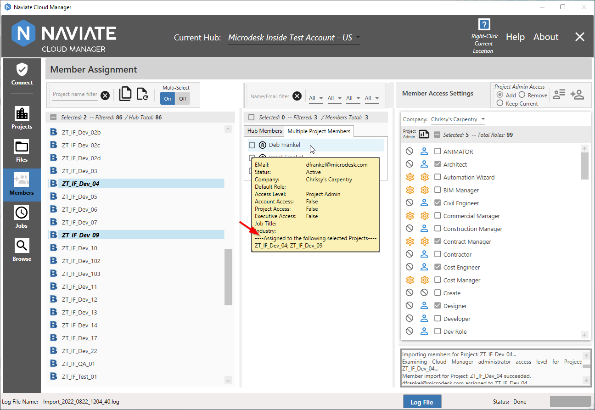
If, when the Import Members button is pressed, at least one project and one member aren’t selected, the Import button is not available.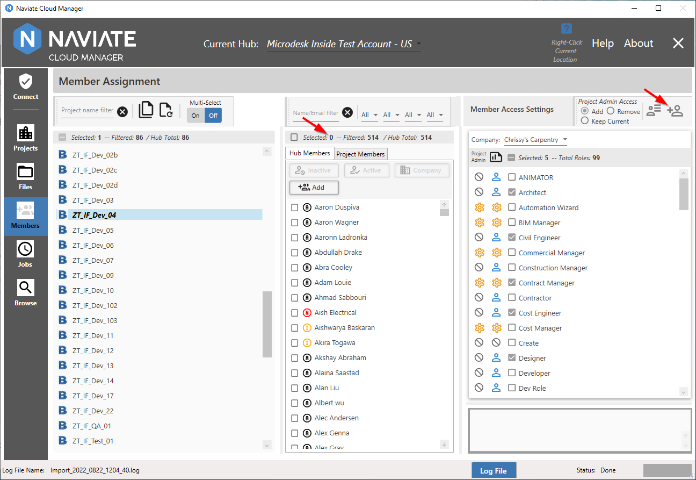
However, with at least one project and Hub member selected, it is now available.
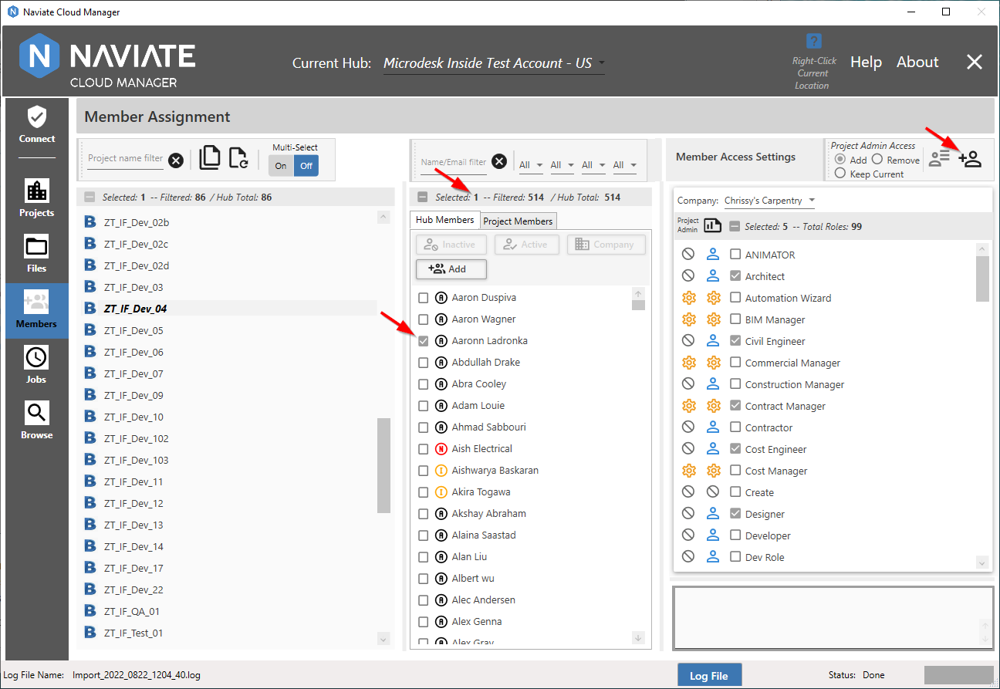
Please Note — there is never a concern about accidentally assigning members to projects to which they are already assigned. Naviate Cloud Manager detects this situation and bypasses those members for that project. The log records them as ‘Skipped’ and doesn’t consider it an error. In other words, all required project-specific members may be safely assigned to a project without concern regarding whether they have already been assigned.
Tip — Assign all members to a project that must have access to the project. If Naviate Cloud Manager sees they are already assigned, it will safely ignore them.